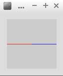
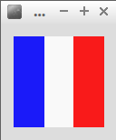

Le « for » est aussi une structure très importante en programmation. Comme pour l'instruction while, nous avons affaire à une boucle, mais les conditions de répétitions sont un peu différentes :
for (début ; condition de répétition ; incrémentation) {
instruction boucle
}
Soit le programme suivant :
for (int i=0;i<=10;i=i+1){
println("i vaut : "+i);
}
Quel est le résultat attendu après l’exécution de ce programme ? Vérifiez votre réponse à l'aide de Processing.
Il est possible de modifier la couleur d'un point grâce à la fonction stroke
Saisissez, analysez et testez ce programme :
stroke(0,255,0);
point (50,50);
Comme vous pouvez le constater le point est toujours situé au centre de l'écran mais maintenant, il est de couleur verte.
Que signifie le (0,255,0) du stroke ?
Toutes les combinaisons sont possibles, vous trouverez sur ce site un nuancier qui vous indiquera les valeurs des canaux Rouge, Vert et Bleu (RVB ou RGB en anglais).
Écrivez un programme permettant d'obtenir une "ligne bicolore" comme ci-dessous :
Vous devrez utiliser une boucle "for" et un "if/else".
Écrivez un programme permettant d'obtenir un drapeau tricolore comme ci-dessous :
Cet exemple commence à devenir difficile, si vous ne trouvez pas, n'hésitez pas à demander de l'aide.